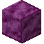
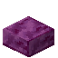
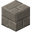

高级建筑材料
除了石器时代的基础建筑材料，金属工具可以帮你生产更多的高级建筑材料
材料目录
石膏
石膏是一种由石膏矿制成的建筑材料。石膏可以直接用石膏矿合成获得，但更高效的方法是在大桶中用 100 mB 石灰水密封一些石膏矿。
石膏砖


4
石膏装饰
石膏可以在装有染料的大桶中染色成任何颜色。天然石膏块也可以用凿子在平滑模式下凿制成磨制石膏，或者合成为楼梯、台阶或墙。
楼梯和台阶

8

6

石砖和砂浆
将一些小石子与凿子在合成栏中合成就可以得到这种岩石的砖。将砖与砂浆合成就能做成坚固的建筑方块。
砂浆可以通过将沙子加入装有石灰水的大桶得到。


4

你还可以制作其他的石头装饰方块，例如裂纹砖和雕刻过的石砖。将圆石或石砖方块放在水下的其他苔石旁，苔藓就会扩散，将其转换为苔石或苔石砖。